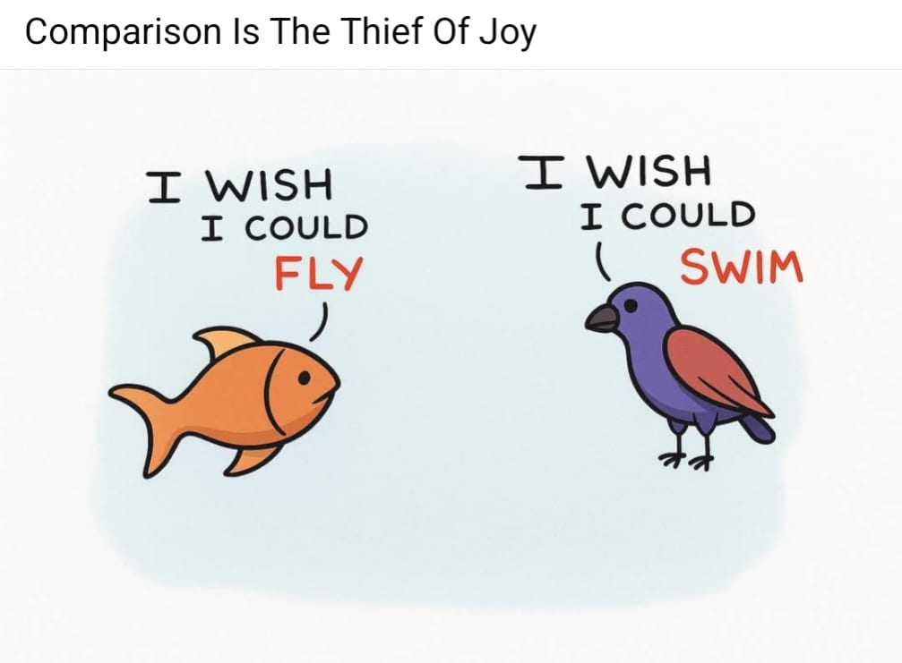

In our everyday lives, we see on social media people our age doing things that are so extraordinary that you couldn't believe it. I would hear about peers my age, or even peers close to me, achieving things that I would never even dream of, and it would make me feel small. It would make me feel less accomplished and make me feel like I would never amount to the high standards that I set for myself.
Comparison is something that many of us have succumbed to. Your friend gets a higher grade than you on a test, has more goals than you, and performed better at that competition than you. No matter what each of us does, we will always have someone that we compare ourselves to. This can either be used as a motivational factor for you to continue growing and striving for better, or it can be acknowledged as a roadblock and someone stepping on your dreams.
I used to compare myself to others, and I would allow these comparisons to hurt my own self-confidence and motivation. I would think to myself that if they can do it and I haven't gotten there yet, why bother? These comparisons stretched further than just accomplishments. I would see happy families and feel envy, feel pity for myself because my parents were not together. I would romanticize small "things" that I perceived as great and magnify them far beyond how much they truly mattered.
I remember being 14 years old, aspiring to be a professional soccer player, and seeing Lamine Yamal, a 15-year-old boy, step up to the largest possible stage in soccer and rise to stardom. In that moment, I felt small. I felt worthless, and I felt a loss of identity. What was the point of continuing my soccer journey, continuing to train hours upon hours, all for something that someone practically my age had already achieved while feeling I was nowhere near the level he was? What was the point for an Average Joe to waste time chasing his dreams when they know themselves that there are people half their age accomplishing what they sought to do?
The answer lies in uniqueness. Every one of our stories is unique: we grew up in a different household, country, even; we hung out with different people; and most importantly, we faced different challenges. The same factors that you are stressing out about might not even be comparable to what someone you compare yourself to faces. Before you question "why couldn't I achieve the same things as they did?" you have to ask yourself, "Are they the same person as I am?"
Each and every one of us is a different book, from a different author, of a completely different genre. We cannot expect to have the same content as the book next to us, and we can definitely not expect the same content to be on the same page number. Comparison can either be used to motivate you, make you strive for better, and prove to you that what you are chasing is possible and that you should continue your journey, or you can allow it to kick you into the dirt and make you lose all your motivation.
There will be many people who accomplish what seems like more than you, make more money, and go to better schools. Some people seem to have their lives figured out and take each step forward flawlessly and effortlessly. That person is not you. I guarantee that whatever life the person you compare yourself to has, you would not switch lives with them in a heartbeat. You would second-guess the challenges you faced, the hardships you overcame, and the achievements you accomplished because of those mistakes that shaped who you are. You will understand that the reason you are here today is a direct product of where you started off and will shape what you will become in the future. We might all start at different starting lines at the race, but each of us has our own strengths, our own challenges we must face, and each of us has a unique destination we will arrive at.
I've been on the other side, someone who has felt lost, hopeless, and stripped of their confidence from seeing their peers achieve something that I sought, have an application accepted that I was rejected from, or reach a milestone that I set out to achieve. However, when I find myself envying someone else, questioning why they got something that I so desperately wanted, I stop myself and realize how absurd I sound. Others are looking at you right now, desperately seeking out the accomplishments you were able to achieve, comparing themselves to you.
Comparison is always an endless cycle with no clear winner, so you can either use it to your advantage or use it to beat yourself up about it. Comparison should not be used to bring you down, but it should be used to show you that the impossible is possible. Somebody else's success does not invalidate your own journey. Their accomplishments do not devalue the time and progress you have attained. The moment you stop obsessing over someone else's accomplishments and story is the moment when you can truly appreciate your own growth and when comparison's reins are detached from you.
Learn to appreciate the fact that there will always be someone ahead of you, someone who motivates you and makes you strive for greater, just like how there will always be someone you motivate and someone who looks up to you. Your story is uniquely you. It's what makes you who you are, and no one else will ever have a story exactly like yours. So learn to appreciate, learn to pat yourself on the back at your milestones, and learn to see the progress you put in while acknowledging and respecting the accomplishments of others.
Support
Resources & Support
If this story resonated with you, these resources may help support individuals struggling with comparison, self-worth, social pressure, perfectionism, identity, and mental health challenges.
Broad Shoulders Initiative is not a crisis service, medical provider, or therapy provider. If support feels urgent, please contact emergency services, a trusted adult, a school counselor, or a licensed professional.